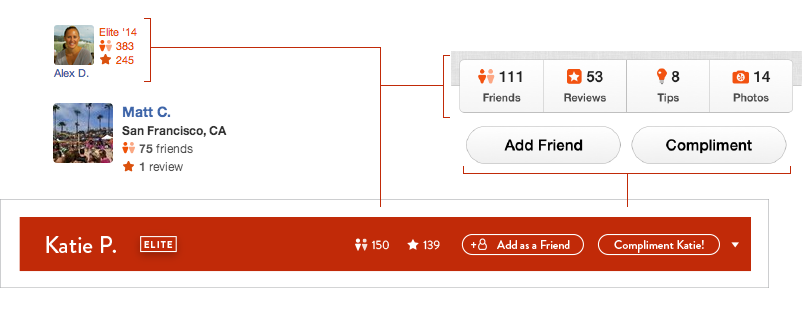
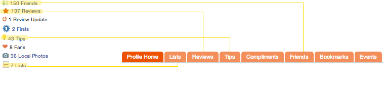
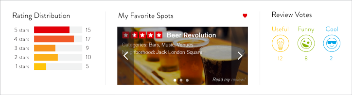

Yelp
The user profile page for Yelp users has always scared me. Inundated by massive amounts of information, I find myself having difficulty focusing on important pieces of information, with my eyes being thrown frantically across different parts of the page.
Challenge
How do we design a Yelp user's profile page in a way that has better visual heirarchy and ease of use? How do we create an interface that highlights the most important functions and information on a user's profile, that people actually want to use.
The major pain points I identified through this project are as follows:
Process
By analyzing the components of the existing site, I found that much of the information was redundant and poorly organized. I organized the site by highlighting Overall information and Reviews, the most important areas when viewing a user's profile, in red and orange. They provide the bulk of information about the user, while, Friends, Compliments and Lists (in different shades of blue), were seen to me as more of specific information serving a seconday importance- they provide additional, specific information, rather than core user data.
As seen below, the lack of heirarchy and organization is apparent- similar elements are separated and have no logical flow.
 [Current user page layout]
[Current user page layout]
Redesigned Layout
The redesign begins with a 2-column design, rather than the current 3-column layout, which reduces clutter and fares better with the eyes due to the reduced amount of horizontal read.

[Website user thumbnail]
[Mobile app user page]
At a Glance
The very first thing a viewer will notice when landing on a user's page, is this bold red bar. Here, the most important info of the number of friends and reviews is available. This red bar draws from both the website and the mobile app, and is a way of bridging the gap of inconsistency in the desktop and mobile app experience.
[Existing overview][Existing nav bar]
Navigation Bar Redone
Apparent on the user's profile page is clutter that is brought about from the redundancy between its navigation bar and an additional overview section below the user's profile picture.
Between this overview section under the profile pcutre and the nav bar, half of the links are repeated and accessible in both sections of the site, with the remaining links being accessible only in their respective areas. I would like to use either the section on the left, or the navigation bar on top - not both.

Say goodbye to the clutter of the user detail info. Most of the information has now been incorporated directly into the navigation bar, thereby reducing redundant information, while inviting use to a more helpful navigation bar. (On several occasions, I have clicked through the navigation bar of the previous site, frustrated to see that I was directed to a page with no content)
Showcase
This area right below the navigation bar provides another quick way to glean information about a user. In an instant, users can see the overall ratings of all the reviews a user has written, their preferences in the places they go, as well as the quality of their reviews.
During my research, I found that many users (sans the truly avid users of Yelp) did not build lists. "My Favorite Spots" is a new feature that is to be a default list created from the beginning of the user's experience, which not only encourages them to start building lists, but also provides viewers of a user's profile an instant feel for the tastes and preferences of a particular user.
This addition addresses a problem that goes beyond a simple redesign - a major flaw with Yelp ratings, is that a given user's reviews do not reflect that tastes of everybody. Individuals have their own unique preferences, and by allowing users to get a feel for another user's specific preferences, they can make more educated inferences about how they themselves will enjoy a place. People might also be more inclined to trust the reviews of a user who has compatible tastes.
Overall, this kind of area for showcasing a public image is what a user detail page needs- a way of making users want to express their preferences and wide experience with Yelp. In order to compliment Yelp's model of gamification, a stage is created where users can express who they are.
[Active Button]
[Inactive Button]
[Static Icon]
Revamped Icons
These updated icons feature a "Funny" and a "Cool" icon character with more personality than before. The icon which Yelp uses to depict the "Cool" compliment (a snowflake), neither indicates the warmth in giving a compliment, nor the emotion of what is being conveyed.
Final Re-Design


{kind=link}
{kind=link}
{kind=link}
{kind=link}
{kind=link}
{kind=link}
{kind=link}
{kind=link}
{kind=link}
{kind=link}
{kind=link}
{kind=link}
{kind=link}
{kind=link}
{kind=link}
{kind=link}